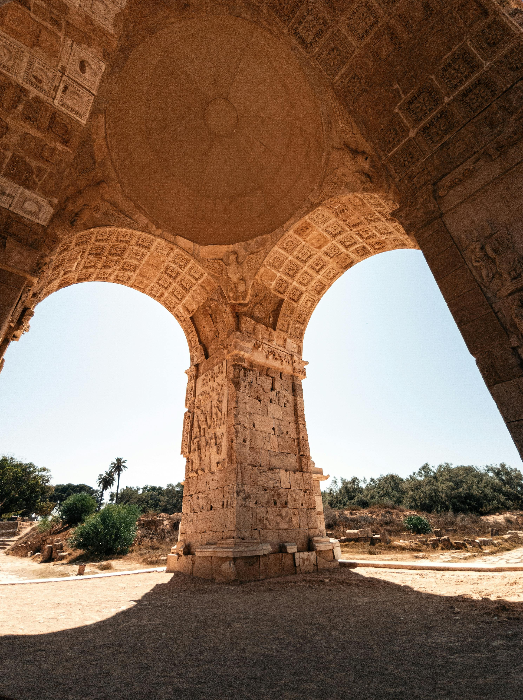

Al Khums
120k
Leptis Magna
La plus belle cité romaine d'Afrique, ville natale de Septime Sévère (UNESCO)

RetourDes colonnes romaines aux sables d'or du Fezzan
La Libye est l'une des destinations les plus fascinantes et les plus riches en histoire du continent africain. Terre de rencontre entre l'Antiquité méditerranéenne et la mystique saharienne, elle abrite cinq sites classés au patrimoine mondial de l'UNESCO, dont les cités romaines spectaculaires de Leptis Magna et Sabratha. De la "Perle du Désert" Ghadamès avec son architecture vernaculaire unique, aux peintures rupestres millénaires du Tadrart Acacus, la Libye offre un voyage épique à travers le temps. C'est une terre de contrastes, où les eaux turquoises de la Méditerranée côtoient les lacs de l'oasis d'Ubari, nichés au creux de dunes géantes.
Explorez les 15 merveilles monumentales de la Libye
La plus belle cité romaine d'Afrique, ville natale de Septime Sévère (UNESCO)

Un chef-d'œuvre architectural face à la Méditerranée (UNESCO)

La "Perle du Désert", oasis aux maisons blanches et rues couvertes (UNESCO)

Cité grecque majeure, temple d'Apollon et nécropole monumentale (UNESCO)

Peintures rupestres millénaires et paysages lunaires (UNESCO)

Lacs d'eau salée nichés au milieu des plus hautes dunes du Sahara

Le Château Rouge, les souks et l'arche de Marc Aurèle

Ancien port de Cyrène, avec des ruines immergées et des basiliques byzantines

Ancienne place forte touarègue, porte d'entrée du désert profond

Somptueuses citernes antiques et colonnes dominant la mer

Architecture berbère unique destinée au stockage des récoltes

Sanctuaire rupestre unique aux sculptures de visages mystérieux
Patrimoine architectural ottoman et italien sur la côte est
Vestiges d'un fort du système défensif romain aux portes du désert
Grand port commercial et centre culturel dynamique de l'ouest libyen
L'héritage d'Hannibal et des Berbères du désert.
La culture libyenne est une tapisserie complexe tissée d'influences berbères (Amazigh), phéniciennes, grecques, romaines et arabes. Pendant des siècles, la Libye a été le grenier à blé de l'Empire romain, une richesse encore visible dans ses cités antiques. Cette identité s'exprime aujourd'hui dans l'architecture fascinante de Ghadamès, conçue pour la fraîcheur du Sahara, et dans les traditions musicales des Touaregs du Fezzan. L'hospitalité libyenne est ancrée dans les valeurs bédouines, où le partage d'un repas de "Bazin" ou d'un thé fort à la menthe est un acte de bienvenue sacré.
Le règne des Sévères et l'apogée de Leptis Magna, une splendeur romaine conservée par les sables.
Un système urbain ingénieux classé à l'UNESCO, où les terrasses sont réservées aux femmes et les rues couvertes aux hommes.
Les galeries préhistoriques de l'Acacus, témoins d'une époque où le Sahara était une savane verdoyante.
Le code de l'honneur et l'hospitalité nomade qui continuent de forger le caractère de la nation libyenne.

L'artisanat millénaire de Libye. Des tapis de Ghadamès aux cuirs fins du Fezzan.
 UNESCO
UNESCO
Tapis traditionnel aux motifs géométriques rouges et blancs, tissé par les femmes de la cité oasienne.
 Artisanat
Artisanat
Colliers et bracelets en argent ciselé, spécialité des artisans touaregs du sud libyen.
 Tradition
Tradition
Plats et jarres en céramique peinte à la main, issus des célèbres ateliers du Djebel Nefoussa.
Articles de maroquinerie en cuir souple de haute qualité, héritage des tanneurs libyens.
Coffret d'épices fraîches du souk (Harat, cumin, cannelle) pour préparer le Bazin authentique.
Vêtement traditionnel féminin d'une grande élégance, tissé avec des fils de soie et de coton.

Tripoli, Grand Luxe

Tripoli, Bord de Mer

Tripoli, Historique & Chic

Tripoli, Centre Moderne

Tripoli, Design Urbain

Tripoli, Confort Business
La cuisine libyenne est généreuse, mêlant les saveurs du désert et les influences de la Méditerranée.
Pâte de farine d'orge servie avec un ragoût de mouton et d'épices, le plat national.
Bouillie de blé sucrée au miel ou au sirop de datte, servie lors des fêtes.
Riz parfumé cuit avec de la viande d'agneau tendre et des amandes grillées.
Saucisse libyenne traditionnelle épicée, spécialité des marchés de Tripoli.
Pâtes libyennes cuites directement dans une sauce tomate épicée, plat quotidien.
Soupe traditionnelle riche en légumes, orge et viande, incontournable au Ramadan.
Réputées pour être les meilleures du Sahara, fondantes et naturellement sucrées.
Thé rouge fort servi avec de la mousse et souvent accompagné d'arachides.
Sirop d'amande douce rafraîchissant, servi lors des mariages et réceptions.
Pâtisserie fine aux noix et au miel, héritage du savoir-faire ottoman.
Crudités fraîches avec une vinaigrette citronnée et des herbes du jardin.
Pain plat cuit au four d'argile, indispensable pour saucer les ragoûts.
Découvrez l'énergie vibrante de la Libye à travers ses festivals culturels et ses traditions oasiennes.
Célébration annuelle de la culture oasienne avec musiques, danses et courses de dromadaires (Octobre).
Festivités nationales célébrant la souveraineté libyenne (24 Décembre).
Rassemblement des cultures touarègues du Sahara, musiques et traditions ancestrales (Novembre).
Les périodes idéales pour visiter les sites antiques et le désert. Le climat est doux, évitant les chaleurs extrêmes de l'été et la fraîcheur des nuits d'hiver sahariennes.
Excellent pour découvrir Tripoli et les côtes. Dans le désert (Acacus), les journées sont belles mais prévoyez des vêtements chauds pour les nuits glaciales sous tente.
Vérifiez systématiquement les conseils officiels de voyage. Le pays est en phase de stabilisation. Voyagez avec des agences agréées et des guides locaux.
Visa obligatoire et souvent délivré via des agences de tourisme locales agréées. Les réglementations changent fréquemment, anticipez vos démarches.
Société conservatrice. Tenue décente requise (bras et jambes couverts). Respectez les usages religieux, particulièrement durant le Ramadan.
Dinar Libyen (LYD). L'économie est basée sur l'espèce. Les cartes internationales sont rarement acceptées. Prévoyez des Euros ou Dollars à changer.
Expert Archéologie Romaine
Guide conférencier passionné par Leptis Magna et Cyrène, Omar vous fera revivre l'époque glorieuse de la Tripolitaine.
Experte Sahara & Acacus
Originaire de Ghat, Salma est votre guide privilégiée pour explorer les mystères du Tadrart Acacus et des oasis du Fezzan.
Guide Culturel Tripoli
Spécialiste de la Médina de Tripoli et des traditions culinaires libyennes, Ali vous fera découvrir l'âme de la capitale.